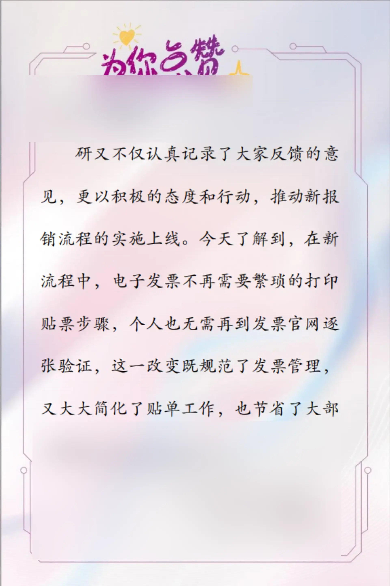
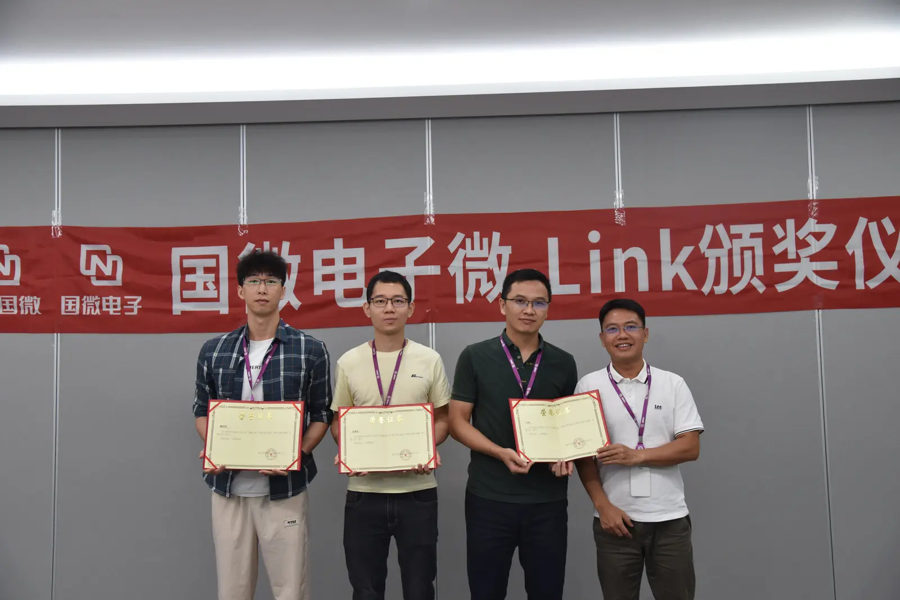
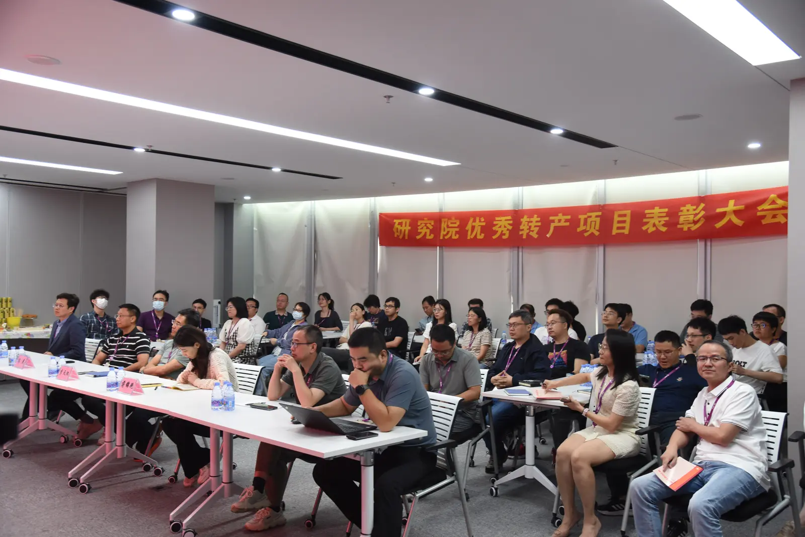

SELECTED WORK 04
MAKE RECOGNITIONVISIBLE
员工荣誉与即时认可
认可不一定只发生在正式的颁奖时刻。
从一张写给同事的点赞卡，到专项荣誉、季度之星与阶段性表彰，我参与设计不同层级的认可表达，让值得被肯定的行动拥有更具体的记录方式。


01 / EVERYDAY
让一句“做得不错”，
留下来
「为你点赞」把轻量的同事认可转化为可以书写、传递和保存的具体载体，让日常协作中的积极反馈不只停留在口头。

02 / RECOGNITION
不同的贡献，
需要不同的表达
当认可进入专项荣誉、季度评选和阶段性表彰，传播也需要从轻量反馈切换到更正式、更具有仪式感的视觉语言。
03 / MOMENTS
让荣誉回到
真实的人和现场
海报之外，认可最终仍然发生在人与组织的真实互动中。颁奖、表彰与现场记录，让视觉传播重新回到具体的人。


RECOGNITION / 04
Recognition can be small.
What matters is making it visible.
认可可以很轻，
但值得被看见的贡献，不该轻轻带过。
SELECTED WORKS
返回更多项目 ↗Employee Recognition · Internal Communication · Culture · Visual Content